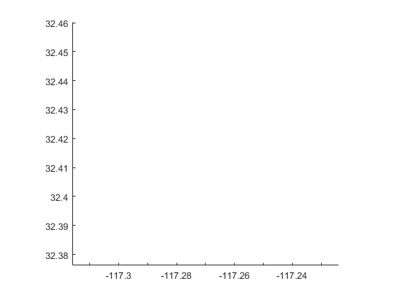
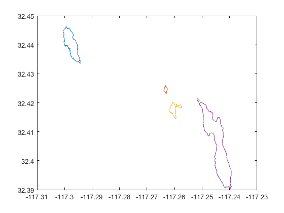
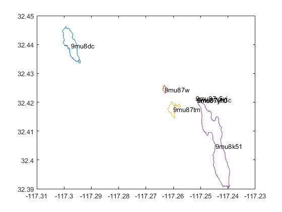

Contents
- Propiedades:
- Geopoligono.Zone
- Geopoligono.area_ha
- Geopoligono.area_km2
- Geopoligono.area_m2
- Geopoligono.ejes
- Geopoligono.geohash
- Geopoligono.latMax
- Geopoligono.latMin
- Geopoligono.lonMax
- Geopoligono.lonMin
- Geopoligono.perimetro_m
- Geopoligono.perimetro_km
- Geopoligono.perimetroEnvolvente_m
- Geopoligono.perimetroEnvolvente_km
- Geopoligono.PuntoMedio
- Geopoligono
- Métodos:
- axis(Geopoligono)
- A == B
- C == D
- B == C
- B ~= C
- plot(Geopoligono)
- Geopoligono2=sort(Geopoligono)
- text(Geopoligono,'geohash')
Coronado = insular(RegionID.coronado); Geopoligono = Geopolygon(struct(Coronado.Islote));
Coronado: \\OSTRERO\datos\coronado_LCosta.shp
Propiedades:
properties(Geopoligono)
Properties for class Geopolygon:
Geometry
Metadata
PuntoMedio
X
Y
Zone
area_ha
area_km2
area_m2
ejes
geohash
indEnv
latMax
latMin
lonMax
lonMin
perimetroEnvolvente_km
perimetroEnvolvente_m
perimetro_km
perimetro_m
xMax
xMin
yMax
yMin
Latitude
Longitude
Geopoligono.Zone
disp(Geopoligono.Zone)
11 11 11 11 11 11 11
Geopoligono.area_ha
disp(Geopoligono.area_ha)
37.3180 2.0201 9.0394 122.3360 0.0481 0.0098 0.2972
Geopoligono.area_km2
disp(Geopoligono.area_km2)
0.3732 0.0202 0.0904 1.2234 0.0005 0.0001 0.0030
Geopoligono.area_m2
disp(Geopoligono.area_m2)
1.0e+06 *
0.3732 0.0202 0.0904 1.2234 0.0005 0.0001 0.0030
Geopoligono.ejes
disp(Geopoligono.ejes)
-117.3159 -117.2240 32.3762 32.4603
Geopoligono.geohash
disp(Geopoligono.geohash)
Columns 1 through 5
'9mu8dc' '9mu87w' '9mu87tm' '9mu8k51' '9mu87y5vj'
Columns 6 through 7
'9mu87yh3c' '9mu87yh0'
Geopoligono.latMax
disp(Geopoligono.latMax)
32.4462
Geopoligono.latMin
disp(Geopoligono.latMin)
32.3902
Geopoligono.lonMax
disp(Geopoligono.lonMax)
-117.2393
Geopoligono.lonMin
disp(Geopoligono.lonMin)
-117.3006
Geopoligono.perimetro_m
disp(Geopoligono.perimetro_m)
1.0e+03 *
4.7349 1.0769 2.7434 9.7452 0.1563 0.0421 0.2066
Geopoligono.perimetro_km
disp(Geopoligono.perimetro_km)
4.7349 1.0769 2.7434 9.7452 0.1563 0.0421 0.2066
Geopoligono.perimetroEnvolvente_m
disp(Geopoligono.perimetroEnvolvente_m)
1.0e+03 *
3.2095 0.7393 1.6416 7.2610 0.1050 0.0406 0.2049
Geopoligono.perimetroEnvolvente_km
disp(Geopoligono.perimetroEnvolvente_km)
3.2095 0.7393 1.6416 7.2610 0.1050 0.0406 0.2049
Geopoligono.PuntoMedio
disp(Geopoligono.PuntoMedio)
7×1 islas.Geopoint vector with properties:
Collection properties:
Geometry: 'point'
Metadata: [1×1 struct]
X: [1×7 double]
Y: [1×7 double]
Zone: 11
Feature properties:
Latitude: [32.4396 32.4245 32.4177 32.4049 32.4215 32.4210 32.4207]
Longitude: [1×7 double]
Geopoligono
disp(Geopoligono)
7×1 Geopolygon vector with properties:
Collection properties:
Geometry: 'polygon'
Metadata: [1×1 struct]
PuntoMedio: [7×1 islas.Geopoint]
X: [1×3386 double]
Y: [1×3386 double]
Zone: [11 11 11 11 11 11 11]
area_ha: [37.3180 2.0201 9.0394 122.3360 0.0481 0.0098 0.2972]
area_km2: [0.3732 0.0202 0.0904 1.2234 4.8052e-04 9.7675e-05 0.0030]
area_m2: [1×7 double]
ejes: [-117.3159 -117.2240 32.3762 32.4603]
geohash: {1×7 cell}
indEnv: {1×7 cell}
latMax: 32.4462
latMin: 32.3902
lonMax: -117.2393
lonMin: -117.3006
perimetroEnvolvente_km: [3.2095 0.7393 1.6416 7.2610 0.1050 0.0406 0.2049]
perimetroEnvolvente_m: [1×7 double]
perimetro_km: [4.7349 1.0769 2.7434 9.7452 0.1563 0.0421 0.2066]
perimetro_m: [1×7 double]
xMax: 4.7749e+05
xMin: 4.7174e+05
yMax: 3.5899e+06
yMin: 3.5837e+06
Vertex properties:
(7 features concatenated with 6 delimiters)
Latitude: [1×3386 double]
Longitude: [1×3386 double]
Métodos:
methods(Geopoligono)
Methods for class Geopolygon: Geopolygon disp isfield plot sort append eq isprop properties struct axis fieldnames length rmfield text cat geostruct mapstruct rmprop vertcat convhull isempty ne size
axis(Geopoligono)
axis(Geopoligono) CoronadoNorte = insular(RegionID.coronadonorte); B = Geopolygon(struct(CoronadoNorte.Islote)); esB = strcmpi(Geopoligono.geohash,B.geohash); A = Geopoligono(esB);
Coronado Norte: \\OSTRERO\datos\MEX_adm0.shp

A == B
disp(A == B) C = Geopolygon(struct(Coronado.Margen)); D = Geopolygon(struct(Coronado.Margen));
1
C == D
disp(C == D)
1
B == C
disp(B == C)
0
B ~= C
disp(B ~= C)
1
plot(Geopoligono)
plot(Geopoligono)

Geopoligono2=sort(Geopoligono)
Geopoligono2=sort(Geopoligono); disp(Geopoligono2)
7×1 Geopolygon vector with properties:
Collection properties:
Geometry: 'polygon'
Metadata: [1×1 struct]
PuntoMedio: [7×1 islas.Geopoint]
X: [1×3386 double]
Y: [1×3386 double]
Zone: [11 11 11 11 11 11 11]
area_ha: [9.0394 2.0201 0.0481 0.2972 0.0098 37.3180 122.3360]
area_km2: [0.0904 0.0202 4.8052e-04 0.0030 9.7675e-05 0.3732 1.2234]
area_m2: [1×7 double]
ejes: [-117.3159 -117.2240 32.3762 32.4603]
geohash: {1×7 cell}
indEnv: {1×7 cell}
latMax: 32.4462
latMin: 32.3902
lonMax: -117.2393
lonMin: -117.3006
perimetroEnvolvente_km: [1.6416 0.7393 0.1050 0.2049 0.0406 3.2095 7.2610]
perimetroEnvolvente_m: [1×7 double]
perimetro_km: [2.7434 1.0769 0.1563 0.2066 0.0421 4.7349 9.7452]
perimetro_m: [1×7 double]
xMax: 4.7749e+05
xMin: 4.7174e+05
yMax: 3.5899e+06
yMin: 3.5837e+06
Vertex properties:
(7 features concatenated with 6 delimiters)
Latitude: [1×3386 double]
Longitude: [1×3386 double]
text(Geopoligono,'geohash')
text(Geopoligono,'geohash')
